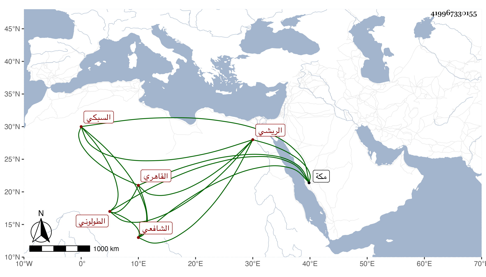

0902Sakhawi.DawLamic.ITO20230111-ara1.EIS1600.419967330155
Biography ID: 419967330155
561
محمد بن حسن بن علي بن أبي بكر خير الدين أبو الخير السبكي الريشي الأصل القاهري الطولوني الشافعي الماضي أبوه ، ويعرف بالكوم الريشي . كان ممن اشتغل يسيرا واختص بالسراج الحمصي وبغيره وحضر بعض الدروس بل وكتب عن شيخنا في الأمالي وأظنه حفظ متونا وشارك في الجملة وبرع في التوقيع ونحوه وكتب الخط الجيد وكتب في الركبخاناه بعناية موسى مهتارها في الأيام الأشرفية ثم وقع لشرباس الناصري حين كان أمير آخرو ثاني وسافر في خدمته لمكة ثم كتب عند العلاء بن أقبرس ، وتنزل في الجهات وأثرى وأهين مرة بعد أخرى ثم ولاه المناوي النقابة بل وناب عنه وعن من بعده في القضاء وكان يتقرب من القضاة بالأقراض لأن دائرته بالمال كانت متسعة مع إفحاشه في المعاملة وسلوكه فيها ما لا يرتضى ، وبالجملة فهو غير مرضي ، وقد حضر عندي بعض الدروس . مات في جمادى الأولى سنة ثلاث وسبعين وقد قارب السبعين وصلى عليه من الغد ثم دفن بجوار المشهد النفيسي عفا الله عنه .
